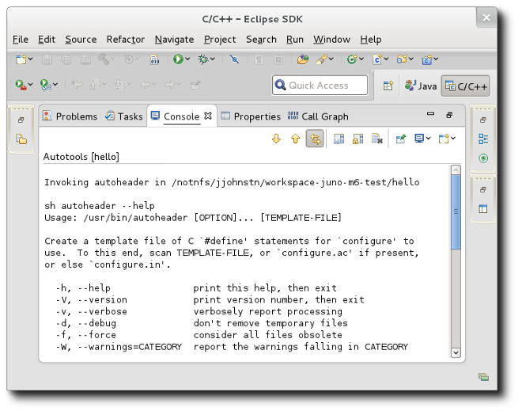
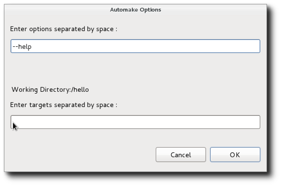
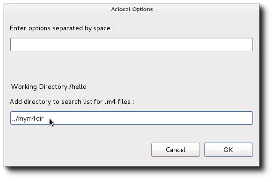
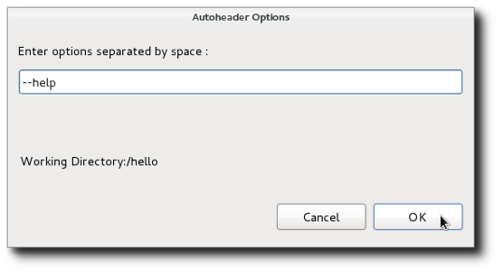
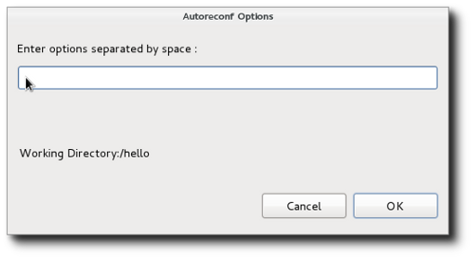
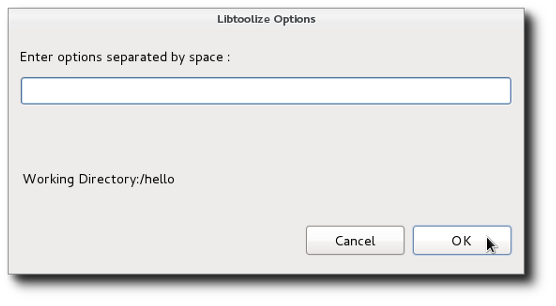
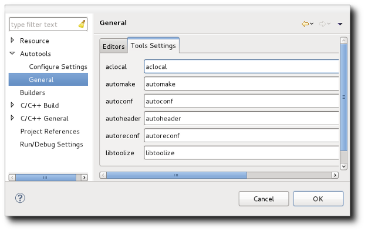

| Invoking Autotools |

|
|

|
| Configuration |
|
Special Editors |
To invoke the Autotools, a special sub-menu has been added to the project Context menu. Select any file in the project and then click on Invoke Autotools. There you will find a set of menu items to invoke the various Autotools for your project. The output of the tool invocation is presented in a special Autotools Console. Like the Configure and C-Build Consoles, the Autotools console is per-project and is not saved across Eclipse sessions. The console, if present, can be accessed via the "Display Selected Console" button in the Console View.

The tools provided are:
- Invoke Autoconf
- The autoconf tool is run in the current directory for the current file or folder selected for the project. There are no parameters. Autoconf can also be run by right-clicking a configure.in or configure.ac file and selected Invoke Autoconf.
- Invoke Automake
- The automake tool is run from the current directory for the file or folder selected in the project. A dialog is presented to allow specification of options.

The first text entry is for options while the 2nd text window is for Makefiles targets to generate. The automake tool should be invoked where the configure script is found that will generate the Makefile(s). There may be multiple Makefiles to generate in the current directory or lower. Each target location should be a Makefile and should have a corresponding Makefile.am file at the relative location specified. For example, automake x/Makefile y/Makefile Makefile specifies three targets. It is expected that there is an x/Makefile.am, y/Makefile.am, and a Makefile.am relative to the current directory. For details on automake, enter --help as an option.
- Invoke Aclocal
- The aclocal tool is run from the current directory for the file or folder selected in the project. A dialog is presented to allow specification of options.

The first text entry is for options while the 2nd text window is for directories to search for m4 macros. The directories can also be specified directly in the options parameters using the -I option. For details, enter --help as an option.
- Invoke Autoheader
- The autoheader tool is run from the current directory for the file or folder selected in the project. A dialog is presented to allow specification of options.

The tool is used to create a template for generated header files. It should be run in a directory containing a configure script as it gets its information from there. For details, enter --help as an option.
- Invoke Autoreconf
- The autoreconf tool is run from the current directory for the file or folder selected in the project. A dialog is presented to allow specification of options.

The most useful option is the -i option to recursively call Autotools for all input files out of date with respect to their outputs. For details, enter --help as an option.
- Invoke Libtoolize
- The libtoolize tool is run from the current directory for the file or folder selected in the project. A dialog is presented to allow specification of options.
.
The tool is used to add libtool support to a package. Libtool provides macros to allow a package to create a shared library without having to know all the details required for the current platform. This might include special compiler flags or linker options or special tools. For details on libtoolize, enter --help as an option.
By default, the autotools are invoked simply by their names; expecting that the path has been set up appropriately. In some instances, you might want to specify a specific location for the autotools. For example, your project may require old versions of the tools which you have installed locally, but do not wish to be on your path. To set these for your project, select your project or a file/folder within it and go to Project -> Properties -> Autotools -> General and select the Tool Settings tab.

|
|

|
|
| Configuration |
|
Special Editors |